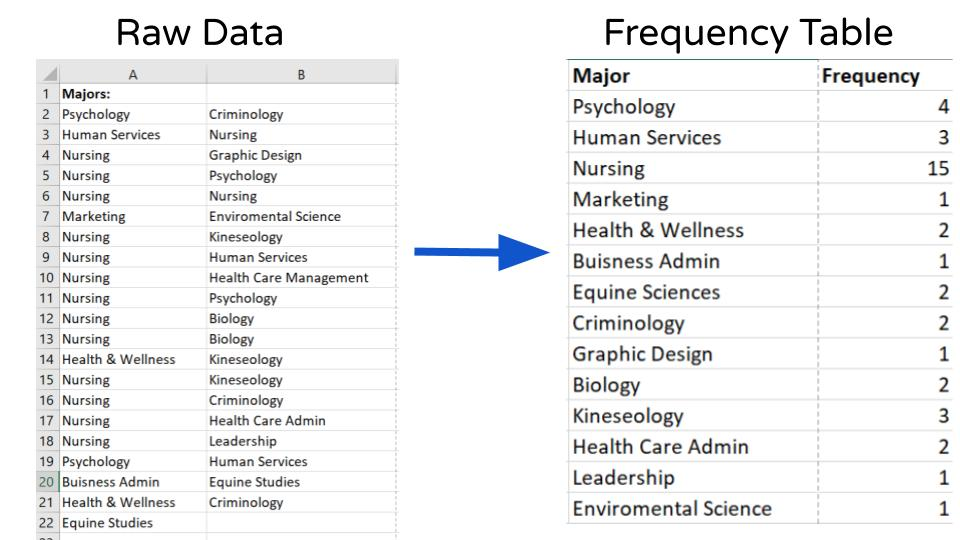

A Frequency Table is the organization of raw data in table form, using classes and frequencies.
Each raw data value is placed into a quantitative or qualitative category called a class.
Key: We group our data into categories (or groups) called a class.
The frequency of a class is the number of data values contained in a specific class.

Answer the following question(s):
Tally up the number of data points for each of your classes.
Make a table with your classes as one column and the frequency as the other column.